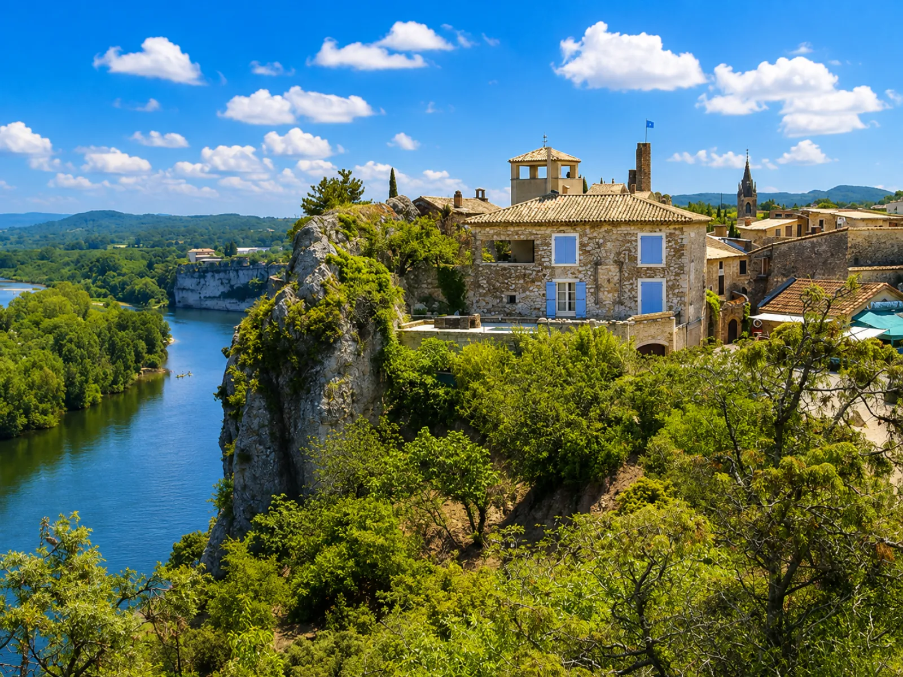

On the Gard bank of the Ardèche Gorges, about 25-30 minutes' drive from Les Cabritas, Aiguèze clings to a cliff overlooking the river just before it joins the Rhône. With just 212 residents, this small fortified village has been listed among the Most Beautiful Villages of France since 2005 — the first village in the Gard to earn the label. Cobbled lanes, golden stone houses, a keep and ramparts make up a remarkably well-preserved medieval setting, best explored on foot before joining the troglodyte rampart walk overlooking the canyon.

A village built to watch over the gorges
Fortified from the 12th century to control a strategic ford on the Ardèche, the village was largely destroyed during the Tuchin revolt of 1382: a few years later, only nine households remained. Its reconstruction, begun around 1500, blended medieval vaulted cellars with Renaissance façades, giving the village the look it still has today. The keep, the Sarrasine tower and the remains of the ramparts, built into the cliff face, recall this defensive past.
An unbeatable view over the gorges
From the troglodyte rampart walk, carved into the village's own rock, the view drops straight down onto the Ardèche Gorges and the suspension bridge linking Aiguèze to Saint-Martin-d'Ardèche. The parish church, Romanesque in origin with a Renaissance doorway and listed as a historic monument since 1993, rounds off the visit, along with the plane-tree-shaded square at the heart of the village, a fine spot for a break after the walk.
Good to know before your visit
Allow about 25-30 minutes' drive from Les Cabritas Sud-Ardèche to reach Aiguèze. The village is entirely walkable — leave the car in one of the car parks at the village entrance, since the lanes are pedestrian, cobbled and sometimes steep. A good hour is enough for a self-guided visit, a little longer if you browse the craft shops or stop at a café on the main square.
Practical information from Les Cabritas
- Distance from Saint-Alban-Auriolles: about 25-30 min by car
- Best time to visit: year-round, early morning or late afternoon to avoid summer crowds
- Ideal for: lovers of historic villages, family strolls, photographers
Want to discover Aiguèze, a Medieval Village Perched Above the Ardèche Gorges from your Ardèche gîte?
Les Cabritas Sud-Ardèche welcomes you in Saint-Alban-Auriolles, in the heart of Southern Ardèche, for a comfortable stay with a private pool, just steps from the region's most beautiful sites.
Check availability